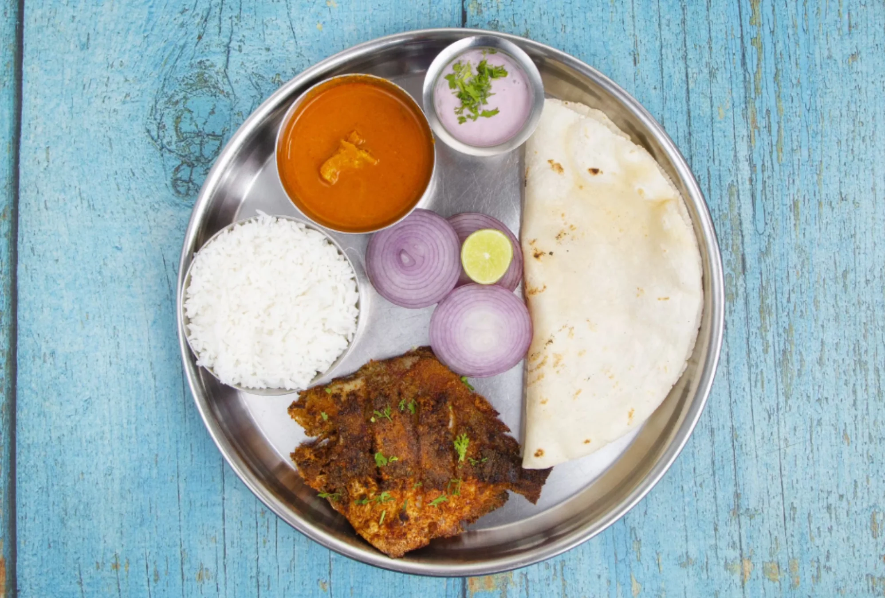
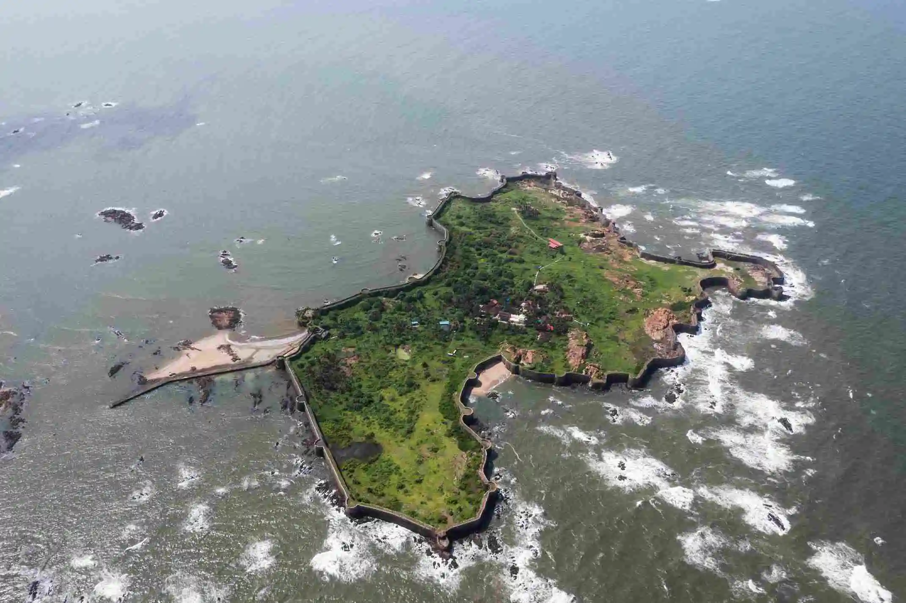
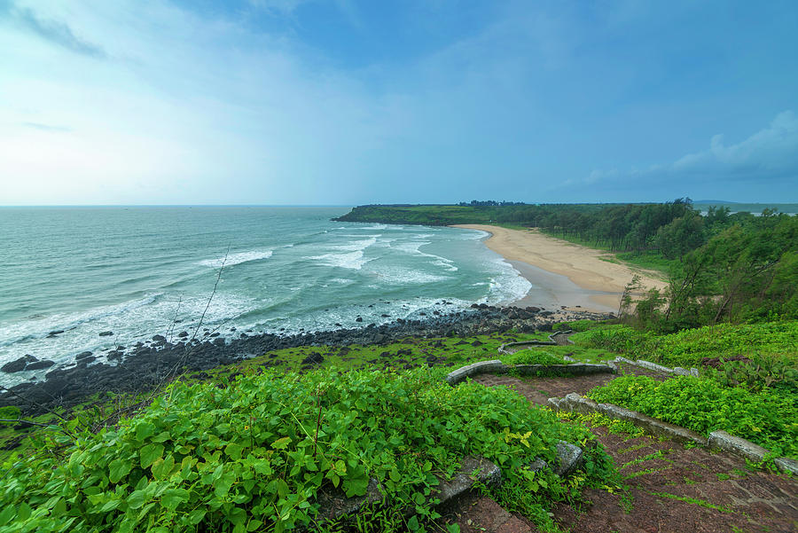

Visit Sindhudurg
Enjoy food, forts and beach in this vibrant district close to the west of Maharashtra.
Top three activities to do at Sindhudurg
Food
Malvani cuisine is proof of the natural bounty of the Konkan coast where coconut, salt water fish, jackfruit and cashew, plantains and native rice, banana and mango are staples.
Forts
Sindhudurg Fort is a historical fort that occupies an islet in the Arabian Sea, just off the coast of Maharashtra in Western India. The fortress lies on the shore of Malvan town of Sindhudurg District in the Konkan region of Maharashtra, 450 kilometres south of Mumbai. It is a protected monument.
Beaches
This charming and secluded beach is a hidden gem of Sindhudurg. With crystal clear waters and pristine sands, Bhogwe Beach is perfect for those seeking a peaceful retreat.
Your guide
"I have lived at Sindhudurg for over 18 years, so I can show you all of its best parts and hidden secrets."